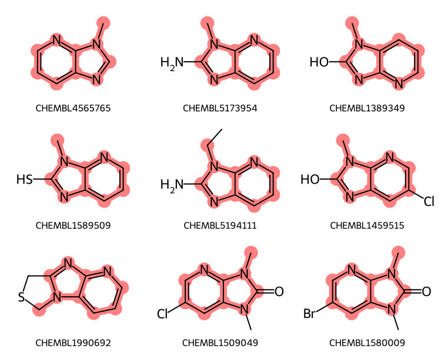

This post builds on, and updates, an older blog post as well as some material from the 2024 RDKit UGM What’s New session. It’s a tutorial on some functionality for making substructure searching considerably more flexible that we call “Generalized Substructure Search”.
I will show how use to use generalized substructure search with both a SubstructLibrary and the RDKit PostgreSQL cartridge.
Load a SubstructLibrary created using ChEMBL 35. I do this using Charles Hoyt’s chembl_downloader Python package to handle downloading the ChEMBL SDF data. For reference, on my 2.5 year old linux box, processing the 2.4 million molecules took ~990 seconds.
The code used to construct this is:
chembl_version="35"from rdkit import RDLoggerfrom rdkit import Chemfrom rdkit.Chem import rdSubstructLibraryimport pickle, timeimport gzipimport chembl_downloaderRDLogger.DisableLog("rdApp.warning")mols = rdSubstructLibrary.CachedTrustedSmilesMolHolder()fps = rdSubstructLibrary.TautomerPatternHolder(1024)keys = rdSubstructLibrary.KeyFromPropHolder() library = rdSubstructLibrary.SubstructLibrary(mols,fps, keys)nats = []with chembl_downloader.supplier(version=chembl_version) as suppl: t1=time.time()for i,mol inenumerate(suppl):ifnot ((i+1)%50000):print(f"Processed {i+1} molecules in {(time.time()-t1):.1f} seconds")if mol isNoneor mol.GetNumAtoms()>75:continue library.AddMol(mol) nats.append(mol.GetNumHeavyAtoms())t2=time.time()print(f"That took {t2-t1:.2f} seconds. The library has {len(library)} molecules.")withopen(f'../data/chembl{chembl_version}_ssslib.pkl','wb+') as outf: pickle.dump(library,outf)# we want to be able to use the number of heavy atoms as a search order:nats =sorted([(x,i) for i,x inenumerate(nats)])order = [y for x,y in nats]# append that to the pickle file with the substruct lib:withopen(f'../data/chembl{chembl_version}_ssslib.pkl','ab') as outf: pickle.dump(order,outf)
Load the pickled SubstructLibrary and the order information:
import picklewithopen('../data/chembl35_ssslib.pkl','rb') as inf: sslib = pickle.load(inf) order = pickle.load(inf)print(f'SubstructLibrary loaded with {len(sslib)} molecules')
SubstructLibrary loaded with 2430167 molecules
Advanced query basics
(Yes, I am laughing as I write this)
Start with a query including a variable attachment point:
If we just use that query with the substruct library we don’t get the expected results:
# change the sort order of the substruct library so that# we get the matches in order of increasing number of heavy atomssslib.SetSearchOrder(order)mids = sslib.GetMatches(qry)print(f'{len(mids)} results')ms = [sslib.GetMolHolder().GetMol(x) for x in mids[:9]]legends = [sslib.GetKeyHolder().GetKey(x) for x in mids[:9]]Draw.MolsToGridImage(ms,legends=legends,subImgSize=(250,200))
1000 results
Repeat that query using the cartridge and my local install of ChEMBL35
matches =%sql postgresql://localhost/chembl_35 \ select chembl_id,mol_send(m) from rdk.mols \ join chembl_id_lookup on (molregno=entity_id and entity_type='COMPOUND') \ join compound_properties using (molregno) \ where m@> mol_from_ctab(:qmb) \ order by (heavy_atoms,chembl_id) limit 1000print(f'{len(matches)} matches')mols = [Chem.Mol(y.tobytes()) for x,y in matches][:9]legends = [x for x,y in matches]Draw.MolsToGridImage(mols,legends=legends,subImgSize=(250,200))
1000 rows affected.
1000 matches
The ordering of the results is different, but the same molecules, most of which don’t match what we intended, are there.
In order to use the advanced query feature (the link node) in the search, we need to construct an extended query mol and then pass that to the substruct library:
xqry = rdGeneralizedSubstruct.CreateExtendedQueryMol(qry)matches = sslib.GetMatches(xqry)print(f'{len(matches)} matches')mols = [sslib.GetMol(x) for x in matches][:9]legends = [sslib.GetKeyHolder().GetKey(x) for x in matches]# get the actual matching atoms from each molecule # so we can highlight them:highlights = []for mol in mols: highlights.append(rdGeneralizedSubstruct.MolGetSubstructMatch(mol,xqry))legends = [sslib.GetKeyHolder().GetKey(x) for x in matches]dopts = Draw.MolDrawOptions()dopts.useBWAtomPalette()Draw.MolsToGridImage(mols,legends=legends,subImgSize=(250,200), highlightAtomLists=highlights,drawOptions=dopts)
1000 matches

Repeat that using the cartridge. The key here is the function mol_to_xqmol():
matches =%sql postgresql://localhost/chembl_35 \ select chembl_id,mol_send(m) from rdk.mols \ join chembl_id_lookup on (molregno=entity_id and entity_type='COMPOUND') \ join compound_properties using (molregno) \ where m@> mol_to_xqmol(mol_from_ctab(:qmb)) \ order by (heavy_atoms,chembl_id) limit 1000print(f'{len(matches)} matches')mols = [Chem.Mol(y.tobytes()) for x,y in matches][:9]legends = [x for x,y in matches]Draw.MolsToGridImage(mols,legends=legends,subImgSize=(250,200))
1000 rows affected.
1000 matches
Many of those include sidechains (or even other rings in the case of CHEMBL1990692) attached to the core. We can limit the results to only have substitutions at two the two positions tagged in the query using the adjustQueryProperties flag. You can find more information about this function in an old blog post
Memo to myself: update that post!
aqps = Chem.AdjustQueryParameters()aqps.adjustHeavyDegree =Trueaqps.adjustHeavyDegreeFlags = Chem.AdjustQueryWhichFlags.ADJUST_IGNORECHAINSxqry = rdGeneralizedSubstruct.CreateExtendedQueryMol(qry,adjustQueryProperties=True, adjustQueryParameters=aqps)matches = sslib.GetMatches(xqry)print(f'{len(matches)} matches')mols = [sslib.GetMol(x) for x in matches][:9]legends = [sslib.GetKeyHolder().GetKey(x) for x in matches]highlights = []for mol in mols: highlights.append(rdGeneralizedSubstruct.MolGetSubstructMatch(mol,xqry))legends = [sslib.GetKeyHolder().GetKey(x) for x in matches]dopts = Draw.MolDrawOptions()dopts.useBWAtomPalette()Draw.MolsToGridImage(mols,legends=legends,subImgSize=(250,200), highlightAtomLists=highlights,drawOptions=dopts)
186 matches
Now do the same thing with the cartridge:
params = json.dumps({"adjustHeavyDegree":True,"adjustHeavyDegreeFlags":"IGNORECHAINS"})matches =%sql postgresql://localhost/chembl_35 \ select chembl_id,mol_send(m) from rdk.mols \ join chembl_id_lookup on (molregno=entity_id and entity_type='COMPOUND') \ join compound_properties using (molregno) \ where m@> mol_to_xqmol(mol_from_ctab(:qmb),true,true,true,:params) \ order by (heavy_atoms,chembl_id) limit 1000print(f'{len(matches)} matches')mols = [Chem.Mol(y.tobytes()) for x,y in matches][:9]legends = [x for x,y in matches]Draw.MolsToGridImage(mols,legends=legends,subImgSize=(250,200))
190 rows affected.
190 matches
Using generic atoms
For the next query we will combine a generic atom along with a link node (a position in the molecule which can have varying numbers of atoms)
There’s more information, including a list of supported atom types, in the RDKit book
qmb =''' Mrv2401 02062512582D 0 0 0 0 0 999 V3000M V30 BEGIN CTABM V30 COUNTS 12 13 1 0 0M V30 BEGIN ATOMM V30 1 C -2.4167 7.8733 0 0M V30 2 C -3.7503 7.1033 0 0M V30 3 C -3.7503 5.5632 0 0M V30 4 N -2.4167 4.7932 0 0M V30 5 C -1.083 5.5632 0 0M V30 6 C -1.083 7.1033 0 0M V30 7 N 0.3973 7.5278 0 0M V30 8 N 0.3104 5.0376 0 0M V30 9 C 1.2585 6.251 0 0M V30 10 C 2.7975 6.1973 0 0M V30 11 N 3.6136 7.5032 0 0M V30 12 * -2.4167 9.4133 0 0M V30 END ATOMM V30 BEGIN BONDM V30 1 1 1 2M V30 2 2 2 3M V30 3 1 3 4M V30 4 2 4 5M V30 5 1 5 6M V30 6 2 1 6M V30 7 1 7 6M V30 8 1 5 8M V30 9 1 8 9M V30 10 2 7 9M V30 11 1 9 10M V30 12 1 10 11M V30 13 1 1 12M V30 END BONDM V30 LINKNODE 1 3 2 10 9 10 11M V30 BEGIN SGROUPM V30 1 SUP 0 ATOMS=(1 12) SAP=(3 12 1 1) XBONDS=(1 13) LABEL=ARY ESTATE=EM V30 END SGROUPM V30 END CTABM END'''qry = Chem.MolFromMolBlock(qmb)# we currently have to do some contortions in order to show labels for the Sgroups:lbls = []for sgs in Chem.GetMolSubstanceGroups(qry):if sgs.GetProp('TYPE') =='SUP': lbls.append((sgs.GetAtoms()[0],sgs.GetProp("LABEL")))# convert the Sgroups into queries: Chem.SetGenericQueriesFromProperties(qry)# now apply the labelsfor idx,lbl in lbls: qry.GetAtomWithIdx(idx).SetProp('atomLabel',lbl)qry
aqps = Chem.AdjustQueryParameters()aqps.adjustHeavyDegree =Trueaqps.adjustHeavyDegreeFlags = Chem.AdjustQueryWhichFlags.ADJUST_IGNORECHAINSxqry = rdGeneralizedSubstruct.CreateExtendedQueryMol(qry,adjustQueryProperties=True, adjustQueryParameters=aqps)params = Chem.SubstructMatchParameters()params.useGenericMatchers =Truematches = sslib.GetMatches(xqry, params)print(f'{len(matches)} matches')mols = [sslib.GetMol(x) for x in matches][:9]legends = [sslib.GetKeyHolder().GetKey(x) for x in matches]highlights = []for mol in mols: highlights.append(rdGeneralizedSubstruct.MolGetSubstructMatch(mol,xqry))legends = [sslib.GetKeyHolder().GetKey(x) for x in matches]dopts = Draw.MolDrawOptions()dopts.useBWAtomPalette()Draw.MolsToGridImage(mols,legends=legends,subImgSize=(250,200), highlightAtomLists=highlights,drawOptions=dopts)
2 matches
We can use generic queries in the cartridge by explicitly calling mol_adjust_query_properties() and including "setGenericQueryFromProperties":true in its arguments (we should clean that up, and make mol_to_xqmol() support the extra work), and by using the @>> operator to search instead of the normal @> substructure search operator.
params = json.dumps({"adjustHeavyDegree":True,"adjustHeavyDegreeFlags":"IGNORECHAINS","setGenericQueryFromProperties":True})matches =%sql postgresql://localhost/chembl_35 \ select chembl_id,mol_send(m) from rdk.mols \ join chembl_id_lookup on (molregno=entity_id and entity_type='COMPOUND') \ join compound_properties using (molregno) \ where m@>> mol_to_xqmol(mol_adjust_query_properties(mol_from_ctab(:qmb),:params)) \ order by (heavy_atoms,chembl_id) limit 1000print(f'{len(matches)} matches')mols = [Chem.Mol(y.tobytes()) for x,y in matches][:9]legends = [x for x,y in matches]Draw.MolsToGridImage(mols,legends=legends,subImgSize=(250,200))
2 rows affected.
2 matches
If we don’t use the generic matchers, we get additional results:
matches = sslib.GetMatches(xqry)print(f'{len(matches)} matches')mols = [sslib.GetMol(x) for x in matches][:9]legends = [sslib.GetKeyHolder().GetKey(x) for x in matches]highlights = []for mol in mols: highlights.append(rdGeneralizedSubstruct.MolGetSubstructMatch(mol,xqry))legends = [sslib.GetKeyHolder().GetKey(x) for x in matches]dopts = Draw.MolDrawOptions()dopts.useBWAtomPalette()Draw.MolsToGridImage(mols,legends=legends,subImgSize=(250,200), highlightAtomLists=highlights,drawOptions=dopts)
4 matches
Tautomer insensitivity
We haven’t seen it in the examples so far, but the results are being done with a tautomer insensitive search - it finds molecules where a tautomer could match the query even if the molecule itself may not directly match.
Here’s a query incorporating both a variable attachment point and a link node which demonstrates this:
aqps = Chem.AdjustQueryParameters()aqps.adjustHeavyDegree =Trueaqps.adjustHeavyDegreeFlags = Chem.AdjustQueryWhichFlags.ADJUST_IGNORECHAINSxqry = rdGeneralizedSubstruct.CreateExtendedQueryMol(qry,adjustQueryProperties=True, adjustQueryParameters=aqps)params = Chem.SubstructMatchParameters()params.useGenericMatchers =Truematches = sslib.GetMatches(xqry, params)print(f'{len(matches)} matches')mols = [sslib.GetMol(x) for x in matches][:9]highlights = []for mol in mols: highlights.append(rdGeneralizedSubstruct.MolGetSubstructMatch(mol,xqry))legends = [sslib.GetKeyHolder().GetKey(x) for x in matches]dopts = Draw.MolDrawOptions()dopts.useBWAtomPalette()Draw.MolsToGridImage(mols,legends=legends,subImgSize=(250,200), highlightAtomLists=highlights,drawOptions=dopts)
20 matches
Molecules CHEMBL105982 and CHEMBL110180, which are drawn with a different tautomer of the ring system we’re lookin for, would not be found using a standard substructure search:
In addition to the link nodes and variable attachment points demonstrated above, the extended query mol also supports SRUs (repeat units with a specified range of repeats, these are similar to link nodes but can support multiple atoms).
The list of supported generic queries can be found in the RDKit Book
Creating advanced queries
Sketchers
At the time I wrote this post, none of the freely available chemical sketchers I was aware of were able to create either link nodes or variable attachment points. The open sketchers like ketcher are steadily improving, but, at least as far as I can tell, they don’t support these advanced query features. I drew all the queries for the post using ChemAxon’s MarvinSketch, which has been my go-to sketcher for years. It’s cross-platform, not insanely expensive, and generaly quite good. Biovia Draw, as you’d expect, can also deal with all of these features (at least it used to back when I still had a license. I stopped paying for that one a few years ago since I wasn’t using it). I haven’t used any of the other commercial chemical sketchers recently, so I can’t comment on their support.
By hand
If you know SMARTS, it’s pretty easy to add either link nodes or variable attachment points to CXSMARTS; here’s some documentation on the subset of CXSMARTS that the RDKit currently supports
Here’s an example for a link node. Here you need to provide the index (all indices in CXSMARTS are zero-based) for the atom that is the link node along with the possible repeat counts:
m = Chem.MolFromSmarts('[#6]-1-[#6]-c2ccccc2-[#7]-1 |LN:1:1.2|')m
For variable attachment points you provide the index of the multi-center attachment point (the atom that will not be actual enumerated molecule) and the indices of the atoms that are bonded to the attachment point’s neighbor:
m = Chem.MolFromSmarts('[#6]-*.c1nc2cccnc2n1 |m:1:3.10|')m
Notice that we currently do a pretty crappy job of generating coordinates for these multi-center attachments. That’s something we need to work on at some point in the future.
SRUs (repeat units that can include multiple atoms) are a bit trickier to provide by hand, but still doable:
m = Chem.MolFromSmarts('c1ccccc1-[#6]-[#8]-C=O |Sg:n:6,7:2-4:ht:::|')m
Note that the current rendering code does not automagically insert missing brackets (something we should fix), but we can see that the correct substance group type has been added: